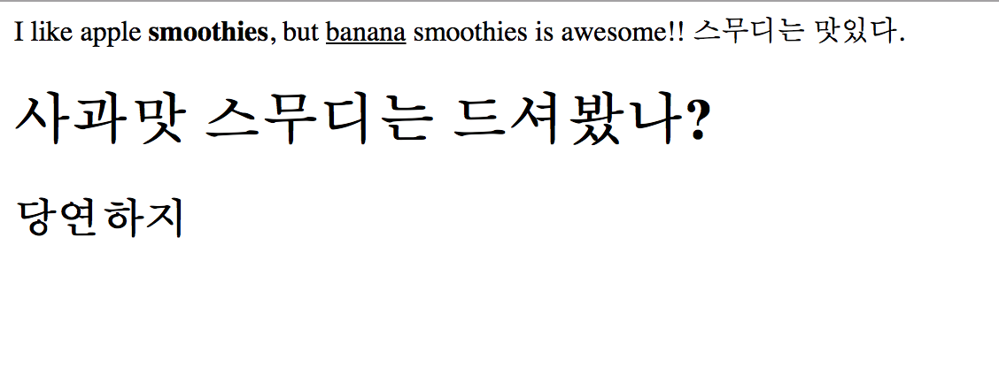

cookies
lotions
phone
juhwan1
juhwan2
juhwan3
I like apple
smoothies
, but
banana
smoothies is awesome!! 스무디는 맛있다.
사과맛 스무디는 드셔봤나?
사실 사과맛 스무디는 존재하지 않았다.
그곳엔 딸기만 남아있었다.
당연하지
나는 어제도
스무디를 먹었고, 오늘도 스무디를 먹는다.
물물물과
자과자과자아브라카다브라 
도레미파솔라시도 시라솔파미레도